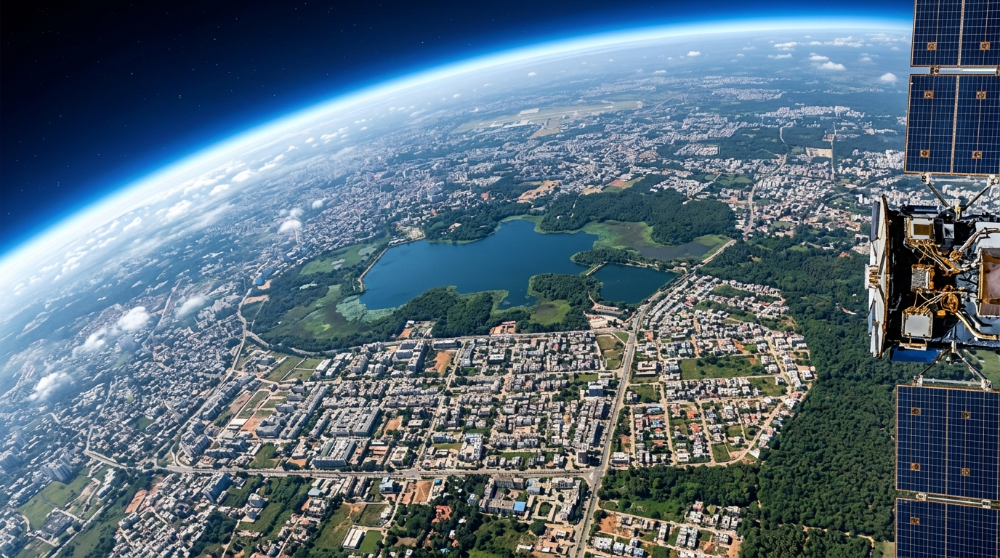

Yelahanka Pilot Study Area
AI-Powered
Satellite
Super-
Resolution
Reconstructing high-resolution imagery from real Sentinel-2 data, validated for urban infrastructure planning and ecological monitoring.
Click to start the backend and enhance the image.

Sentinel-2 | 10m
EDSR ×4
10m → 2.5m
Yelahanka, North Bengaluru